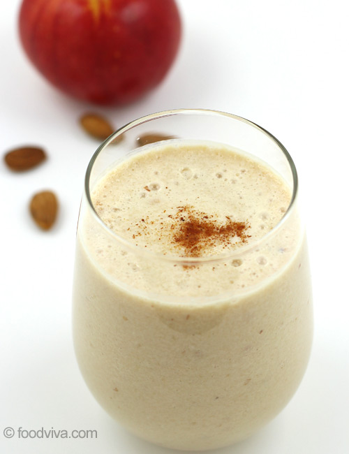

Apple smoothie

This apple smoothie works well with any kind of apple—sweet, tart, or anything in between.
With warm pie spices, Greek yogurt, banana, and almond butter,
it's a great way to begin your day or liven up the afternoon.
- 1 small banana, peeled and frozen
- 1 large Fuji apple, cored and sliced
- 3/4 cup whole milk plain Greek yogurt
- 1/4 cup unsweetened apple juice
- 3 tablespoons rolled oats
- 1 tablespoon almond butter
- 2 teaspoons maple syrup, or to taste
- 1 pinch ground cinnamon
- 1 pinch ground nutmeg
- 1 pinch ground cloves
- Place banana, apple, yogurt, apple juice, oats, almond butter, maple syrup, cinnamon, nutmeg, and cloves into the cup of a high speed blender, and blend until smooth.
- If desired, add ice for a thicker smoothie, or add milk for a thinner consistency.